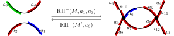
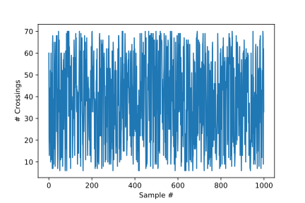
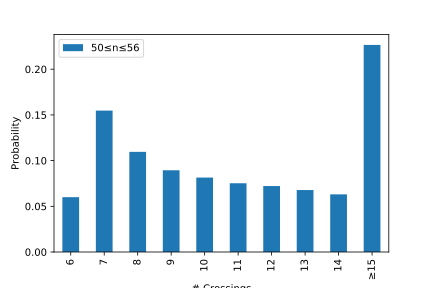
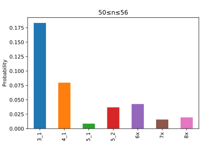

New questions
for knot diagrams
Steady states for crossing changes in knot diagrams
Colorado State University
hchapman.org/talks/birs_steadystate
The Topology of Nucleic Acids:
Research at the Interface
of Low-Dimensional Topology,
Polymer Physics and Molecular Biology
Banff International Research Station
Banff, Alberta
March 24th 2019
Knot Diagrams
Crossings are the primary components of knot diagram models
Crossings as Self-contacts
Crossings may be viewed as self-contacts where enzymes may act to change DNA topology
Strand passage action, e.g. topo-IV

Coherent smoothing action, e.g. XerCD-dif-FtsK complex
A Prior Study
Hua, Nguyen, Raghavan, Arsuaga, Vasquez (2007)
Calculated transition probabilities between knot types and steady-state probabilities of DNA molecules under the action of topo-IV.
Strategy of Hua et al.
Issue
Action of topo-IV is easily expressed diagrammatically, but complex to represent with self-avoiding polygons (SAPs) aloneStrategy
Sample SAPs, then transfer to diagrams to study action of topo-IVStrategy of Hua et al.
For each prime knot type \(K\), sample diagrams representing \(K\) from a weighted distribution:
- Sample SAPs representing \(K\) uniformly of desired sizes, using BFACF
- Randomly project to 50–100 diagrams
- Result is a list of diagrams for \(K\), weighted by occurrence: sample from this list uniformly
Idea
Crossings in diagrams drawn under weighted distribution likely represent crossings close in original SAPsDependence on Distribution?
Question
How tied are the results of Hua et al. to the projection-weighted distribution on diagrams?Aim to answer this by applying the same techniques, now using uniform distribution on knotted diagrams
Diagram MCMC
One step of a diagram Markov chain takes as input a knot diagram, performs with some probability a (Reidemeister) transition, and returns the resulting knot diagram
Shadow Markov Chain
Explore all knot shadows by ignoring crossing signs; get all knot diagrams by adding crossing informationFixed Knot Type Markov Chain
Explore all diagrams of fixed knot type by respecting crossing signs (c.f. BFACF and lattice polygons)Reidemeister Transitions

Stationary Distribution
C–Rechnitzer
The Wang-Landau Markov chain on diagrams of knot type \(K\) has stationary distribution where the probability that an \(n\)-crossing diagram \(D\) representing \(K\) is sampled is, \[ \pi(D) \propto \frac{1}{g_n(K)} \approx \frac{1}{k_n(K)}. \]Knot diagrams for \(K\) are sampled
- uniformly for any given size, and
- approximately each size is equally likely
Under the (Sampling) Hood
- Maximum diagram size considered: \(70\) crossings
- Enumeration step ran with flatness parameter \(\Delta = 0.99\) until update parameter \(f \le 10^{-6}\)
- Enumeration step took approximately 1d to tune all 36 knot types
- Samples drawn every \(1.5 \times 10^{5}\) attempted transitions
- \(100,000\) diagrams sampled for each knot type (approx. \(1,500\) samples per diagram size)
- Data for each knot type gathered in approximately 25m, totalling 15h
Approximate Enumeration: \(6_1\)
| \(n\) | Rooted | Rooted/\(4n\) | Exact (CCM '16) |
|---|---|---|---|
| 6 | 12 | .5 | 1 |
| 7 | 911.68 | 32.56 | 34 |
| 8 | 40 207.17 | 1 256.47 | 1 267 |
| 9 | 1 370 185.44 | 38 060.71 | 38 199 |
| 10 | 40 659 767.57 | 1 016 494.19 | 1 015 996 |
| 11 | 1 103 328 823.05 | 25 075 655.07 | N/A |
Exact enumeration data from Cantarella-C-Mastin '16
Diagram Sizes Sampled over Time: \(6_1\)
Strategy for Uniformly Sampled Diagrams
Now we just:
- For each prime knot type \(K\), sample diagrams representing \(K\) from the uniform distribution of a desired size range, using fixed-knot type diagram MCMC
Then, we apply the same analysis as in Hua et al.
Steady States for Topo-IV Action
In either study, after sampling a diagram of type \(K\):
- Reduce the diagram fully by \(\mathrm{RI}^{-}\) and \(\mathrm{RII}^-\) moves
(except in the case of the unknot)
Reidemeister Transitions
A Random, Non-Reduced \(6_1\)
Reduced Diagram Size: \(6_1\)
Reduced Diagram Size: \(6_1\)

Steady States for Topo-IV Action
In either study, after sampling a diagram of type \(K\):
- Reduce the diagram fully by \(\mathrm{RI}^{-}\) and \(\mathrm{RII}^-\) moves
(except in the case of the unknot) - Pick a crossing uniformly at random and make a crossing change
- If the resulting knot type is sufficiently small (\(cr(L) \le 8\)) and prime, record it
Topo-IV Transition Probabilities: \(6_1\)
Topo-IV Transition Probabilities: \(6_1\)
Steady States for Topo-IV Action
Gathering data for each prime knot type \(K\) of up to 8 crossings yields a square stochastic matrix \(M\)
Topo-IV Steady State Distributions
Topo-IV Steady State Distributions

Topo-IV Steady State Distributions

Rescaling the \(x\)-axis?
The expected average crossing number over all projections of a \(M\)-edge Gaussian random polygon is \(O(M \ln M)\)
Can rescale \(x\)-axis by \(e^{W_0(n)}\) where \(W_0\) is the main branch of the Lambert \(W\) function (satisfying \(z = W(ze^z)\))
Topo-IV Steady State Distributions
Questions and Take-aways
- Do these data show a key difference between diagrams and space polygons?
- Uniform diagram sampler allows new tests for null hypotheses in many other previous experiments (e.g. Stolz et al. '17 work on XerCD-dif-FtsK in E. coli)
- Wang-Landau approximate enumeration provides new enumeration of numbers of diagrams for given knot types